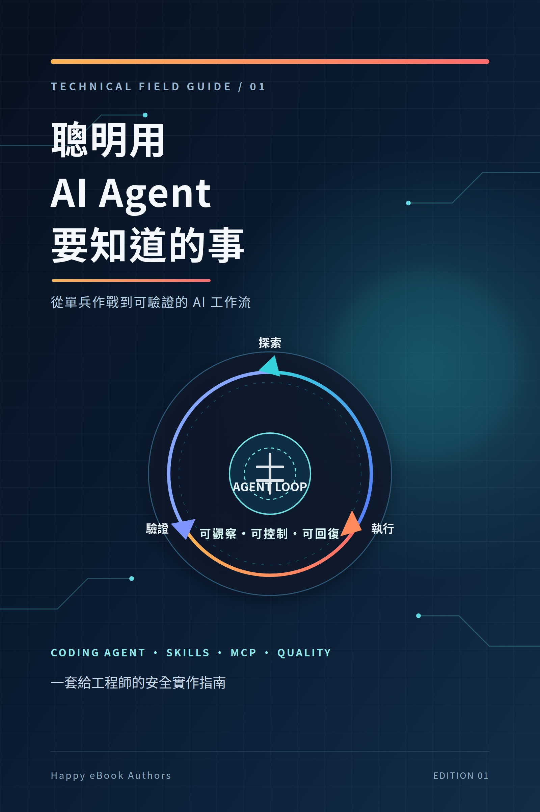

電子書
聰明用 AI Agent 要知道的事
從單兵作戰到可驗證的 AI 開發工作流

聰明用 AI Agent 要知道的事
從單兵作戰到可驗證的 AI 開發工作流
一本給工程師的 AI Agent 實作指南，從 Codex、Claude Code、Pi、Agent Skills 與 MCP 出發，說明模型選擇、成本控制、多 Agent 協作，以及測試、資安與品質閘門。 本書協助讀者建立可理解、可審查、可回復的 AI 開發工作流，將 AI Agent 納入實際工程流程，而不是只依賴模糊的 Prompt。書中並提供 Reader Lab、設定範本與檢查清單。